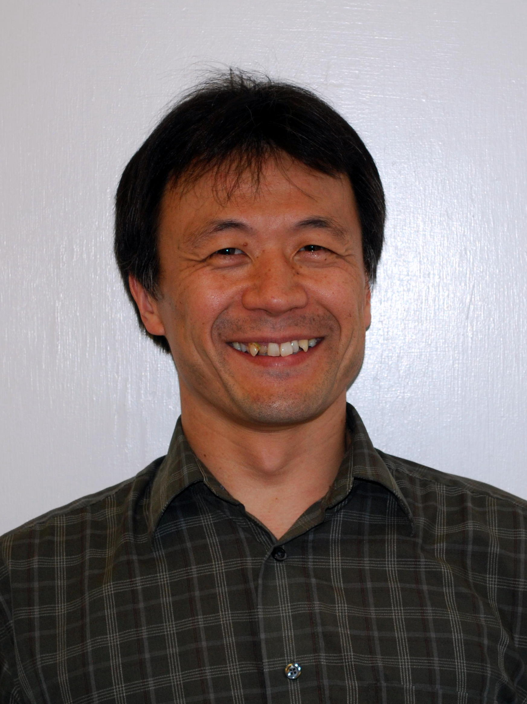

Associate Professor
Director:
Innovative Educational Computing Lab
Department of Computer Science
NC State University
Email: Noboru.Matsuda@ncsu.edu
Tel: 919-513-6528
Office: 408 Venture IV
890 Oval Drive
Engineering Building II
Raleigh, NC 27695
[Japanese]